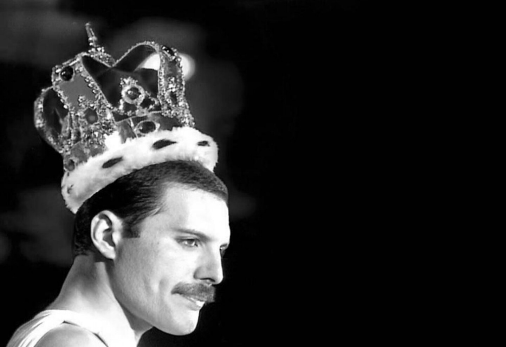

Freddy Mercury 1946-1991, nacido como farrokh Bulsara en Zanzibar, fue el iconico vocalista y compositor principa de Queen. Conocido por su rango vocal de cuatro octavas y teatralidad en el escenario, compuso exitos mundiales como "Bohemian Rhapsody" y "We Are the Champions". Fue un innovador del rock y un icono cultural, fallecido a los 45 años por complicaciones del sida.